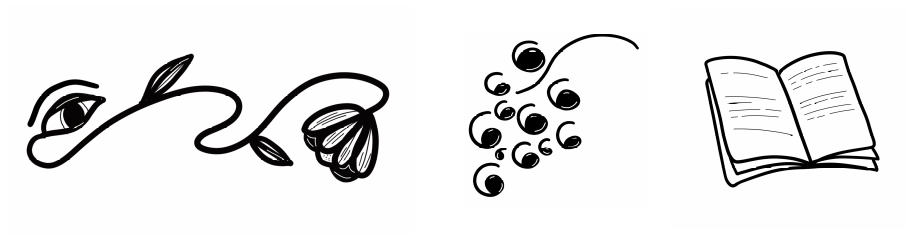

Enligt legenden pryddes bokhyllorna i det mytomspunna alexandrinska biblioteket av inskriptionen ψυχῆς ἰατρείον: själens läkehus. I tusentals år har litteraturen varit en källa till kunskap om människans villkor. Förutom insikter om vilka vi är och har varit pekar litteraturen också ut riktningar mot vilka vi vill vara och kan bli. Våra erfarenheter bottnar i andras.
Interaktiv biblioterapi är ett introspektivt, enskilt och privat litterärt samtal mellan dig och din terapeut. Samtalet bygger på dina intryck av det lästa och är inriktat mot din personliga utveckling. Litteraturen blir i första hand en reflektionsyta. Författarens avsikter och litteraturhistoriska sammanhang lägger vi åt sidan.
Interaktiv biblioterapi passar också dig som vill bredda ditt intresse för litteratur, ett särskilt ämne eller ett författarskap i trevligt och initierat sällskap.
Innan första träffen möts vi för ett förberedande samtal för att lära känna varandra och tillsammans komma fram till vilken litteratur som passar just dig.
Intresseanmälan